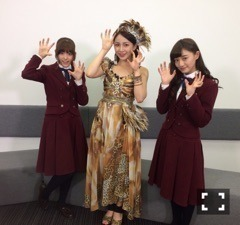

2015/0929Tueうふふっ(o・・o)
松村沙友理です！
すっかり涼しくなって
みんなと 暑いのと寒いのどっちが耐えれるか
よく議論する季節になりましたね♡
みなさんはどっちですか？
今日は 生のアイドルが好き！
第３０回の放送がありましたー
見てくださった方
コメントくださった方
本当にありがとうございました！
ゲストは
GEMさんと
吉川友さんでしたー
すっごく楽しくて 久しぶりにいっぱい喋っていっぱい笑ったなと思いました！！
かなちゃんもいつもありがとう♡
お互いの生誕祭でMCをやり合ったり
うふふ♡な関係です！
実は先月の終わりに
来月 凄いことありますってボードを出したのですが
それは かなちゃんのブログを見てください！
それと
ついに１０月1日から
舞台「すべての犬は天国へ行く」が
渋谷のAiiA 2.5 Theater Tokyoにて
始まります！
１２日まで
１８公演あります！
凄く 実力のある演者さんとご一緒させて
もらうので
私たち乃木坂メンバーも頑張ってます！
凄く 面白いと思います！
お時間あれば 是非きてください！
よろしくお願いします！

2015/09/29 23:36


コメント(396)
ブロク連チャンだ！
舞台もうすぐなので楽しみです(^ ^)
これからも応援してま〜す（≧∇≦）
終わってウィンターパーティやがな
今日村さんの絵を描く回の乃木どこ見てるんですけど、さゆりん面白すぎます（笑）
おつかれさまっちゅん！
犬頑張ってね！
結婚してください。
舞台行けないけど成功する事願ってるよ(^-^)
無理せずに頑張ってね❗
舞台はめっちゃ見に行きたいんやけどバイトが忙しくて今回は行けないんだよね(＞＜)
でも、その分クリライは必ず行くからね！！！
香川のいっちー♪
今日生ドル見たかった…
PerfumeのLIVEみてきました(＞人＜;)
LIVEとか舞台欲高まったから
舞台楽しみにしてます！
12日だから
洗練されたさゆりん楽しみにしてます笑
おやすみなさい
かけるん
タイムシフト予約したから、ゆっくり見させてもらうね^_^
舞台は千秋楽見に行くよ^_^
今からすごい楽しみ＼(^o^)／
答えがあったらいいけど…(笑)
うーん 寒いほうかな？
汗をかいて、ベタベタになるのが嫌なんだよね
汗をかくのは好きだけど笑
さゆりんはどっちなのー？
かわいいー！
お仕事頑張ってね！
生ドル見ててすごく楽しかったよ！
なんか、元気な沙友理ちゃんが見れてよかった！
すべての犬は天国にいく
いくよ！10/10かな！
一回しか見れないのが辛いw
あともう少しで始まるね！
稽古とかあると思うけど頑張ってな！
冷たいあの空気とかコートとか胸がきゅーってなるのが好き(*^^*)
暑いのはどーにもならないんでねｗ
生ドル楽しかったよー！！！
755にもコメントしてる✨
犬も今日でもっと楽しみになった！
ブログもう来ないよね？笑
来ても嬉しいけど笑
おやすみ～
みんな可愛かったけどさゆりんが一番綺麗で可愛かった。おさわり占いってあれ本当は適当でしょー？w
今日は見れんかったんよ┗(↑o↑)┛＜ ｴｩﾝｪｩｩｩｩｩﾝ
( TДT)ｺﾞﾒﾝﾖｰ
来月こそはタイムシフトもちゃんとして生で見れたら見ます！
そして、もう一つの記事のコメントにも書きましたが舞台行きます！
元々舞台が好きだったってのもあり、今から楽しみです！
季節の境目ということもあり、寒暖差も出てきます
体に気をつけてください（ ^ω^）ﾆｺｯ
そんなまっつんとまいちゅんをお目当てに
急遽、舞台鑑賞を決めました！
稽古はきつくて、色々と大変な状況も伺えますが
もの凄く楽しみにしています。
いつも笑顔のまっつんが大好きです。
笑顔を絶やさずにこれからも頑張ってね！
舞台頑張ってください！舞台でのさゆりんめっちゃ輝いてるので僕もこの目にしっかりと焼きつけます！笑
それではまた！
私は暑い方が耐えられます！
さゆりんごはどっち((・・))？？
舞台ついに始まるね！
見に行きたいです(^^)/
今回もめっちゃ面白かった！さゆりんの表情も色んなあったし最高だった！•̀.̫•́✧
舞台もお楽しみ！さゆりん頑張れ！•̀.̫•́✧
まっちゅんふぅーー！！
まさかの連投（笑）
さっきコメしたけど、舞台1回だけど行くよ
まだ、どんなお話なのか勉強してないけど1回で理解出来るように頑張るよ
コメントする